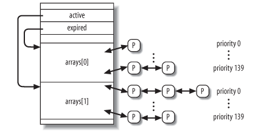
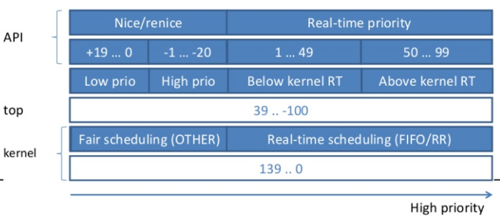

Linux Kernel: Process Scheduling
Table of Contents
1 Linux Kernel: Process Scheduling
1.1 Overview
linux 2.6.11 的进程调度的主要特征:
- scheduler 是一个基于 roundrobin 的算法: 每个进程有一个时间片 (slice 或 quantum), 时间片是每次 roundrobin 时进程可以执行的时间长度, 大小 一般为几毫秒到几百毫秒.一次 roundrobin 完成后所有进程的时间片得到补 充进行下一次 roundrobin
- 每个 cpu 的 runqueue 有 active 和 expired 两个数组, 每个数组包含 140 条链表, 对应 140 个优先级, 所有本次 roundrobin 时间片已经耗尽的 进程按优先级组织在 expired 数组中,还有时间片的组织在 active 数组中, scheduler 在 pick next 时在 active 数组中通过一个 bitmap 可以在 O(1) 内找到最高优先级的一个 task, 所以 2.6.11 的 scheduler 称为 O(1) scheduler, 2.6 之前的 scheduler 称为 O(n) scheduler, 因为它只有一条 链表, 每次 pick next 时需要通过排序找到一个最高优先级的.
- 进程有静态优先级 (static priority), scheduler 会根据静态优先级给进 程分配不同长度的时间片, 静态优先级越高, 时间片越长
- 进程有动态优先级 (dynamic priority), 在 roundrobin 时 scheduler 根 据动态优先级来选择进程执行的顺序
- 动态优先级是在静态优先级基础上使用 "平均睡眠时间" 进行补偿或惩罚而 来, 简单的说, 平均睡眠时间越长, 对动态优先级的补偿越多
- 除了一般的基于时间片与动态优先级的调度外, scheduler 还支持实时调度 来调度实时进程, 但实时进程与普通进程还是要竞争同一个 cpu, linux 的 实时进程只是有更高的优先级和更多的调度机会, 但它无法保证实时进程能 在"确定的时间"内完成, 所以它只软实时(soft real time)
- 通过 "平均睡眠时间", scheduler 可以识别出 "交互式进程" (interactive process) 与 "批处理进程" (batch process), scheduler 会通过调整 roundrobin 分配给 "交互式进程" 更多的执行机会
- 多 CPU 的负载均衡, 可以将繁忙的 CPU 中的 task pull 到当前 CPU 中, 或 者将当前 task push 到空闲的 CPU 中
1.2 相关数据结构
1.2.1 runqueue
runqueue 是一个 Per-CPU variable, 即每个 CPU 都有一个 runqueue, 这个 runqueue 是进程调度最主要的数据结构, 它维护了一个 running 进程的队列, scheduler 需要从这个队列中选择进程来执行
struct runqueue { // runqueue 维护的所有 running 进程的个数, 是 active 和 expired 之和. // 这个值反应了当前 cpu 的负载程度 unsigned long nr_running; /* curr 即 current, idle 即 swapper */ task_t *curr, *idle; /* 最主要的数据结构: runqueue 中所有的进程被分为两类: active 与 * expired, active 是指时间片尚没有耗尽的进程, expired 是指本次 * roundrobin 过程中时间片已经耗尽的进程, scheduler 只会从 active * 中寻找 candidate, 参考 process */ prio_array_t *active, *expired, arrays[2]; /* 指示是否需要将当前 runqueue 的 task 转换到其它 cpu */ int active_balance; }
关于 runqueue 中的 arrays, active, expired:

其中 p 组成的链表对应的 list entry 是 task_struct->run_list
1.2.2 task_struct
具体的参考 task_struct, 其中和 scheduler 相关的部分:
struct task_struct { volatile long state; /* dynamic priority */ int prio /* static priority */ int static_prio; /* 和 runqueue 有关 */ struct list_head run_list; prio_array_t *array; // 平均睡眠时间, 和 time slice 大小及 interactive process 的判定有关, // 需要注意的是 sleep_avg 是指 1s 之内处于 sleeping 的时间, 但它的统 // 计方法并不是严格意义上的平均, 只是一种近似的方法 unsigned long sleep_avg; // timestamp 是记录 task 与计算 sleep_avg 相关的时间戳 // 1. 被 schedule in 或 out 的时间 (schedule) // 2. 被唤醒的时间 (try_to_wake_up) unsigned long long timestamp, last_ran; int activated; /* scheduler: SCHED_FIFO, SCHED_RR 或 SCHED_NORMAL */ unsigned long policy; /* CPU mask */ cpumask_t cpus_allowed; /* 当前进程剩余的时间片 */ unsigned int time_slice unsigned int first_time_slice; /* 实时优先级(policy 需要是 FIFO 或 RR) */ unsigned long rt_priority; };
1.2.3 priority
dynamic priority 的范围为 0~139, 但上层 API 中 priority 的含义与 kernel 内部的 dynamic priority 定义有些差别:

- kernel 内部定义的范围为 0~139, 其中 0~99 对应 real time priority, 100~139 对应 conventional priority, 而且 0 是最高优先级, 139 是最低 优先级
- 通过 nice 系统调用可以设置的参数范围为 -20~+19, 它只会影响 conventional process 的 static priority, 实际上 static_prio = 120 + nice, 即 nice 为 -20 时, static_prio 为 100, 为 conventional process 的最高优先级, 相反, nice 为 19 时, static_prio 为 139, 为 conventional process 的最低优先级. 默认的 static_prio 为 120, 即 nice 为 0
- bash 中 ps 或 top 看到的值的范围为 39~-100, 与 kernel 的 139~0 对应, 即 static_prio = ps_prio + 100
- real time process 的 rt_priority 通过 sched_setscheduler 来设置, 但 与 conventional 不同的是, rt_priority 会影响 dynamic priority 而不 是 static_prio: prio = 99 - rt_priority, 所以, 当 rt_priority 为 99 时, prio 为 0, 是系统最高的优先级, 当 rt_priority 为 1 时, prio 为 98, 是 real time 最低优先级, 但仍比 conventional 的最高优先级 (100) 高
1.3 相关的函数
进程调度的主要入口是 schedule 函数, 但 schedule 函数工作时要依赖于 两个数据的维护:
task_struct->slice_time
进程本次 roundrobin 剩余的时间片, 时间片为 0 的进程需要变成 expired 状态, 本次 roundrobin 不能再调度它, slice_time 由 scheduler_tick 维护
task_struct->prio
动态优先级, roundrobin 时需要根据 sleep_avg 调整动态优先级以选择进 程, 由 try_to_wake_up 时的 recalc_task_prio 维护
1.3.1 scheduler_tick
每次时钟中断发生时1, scheduler_tick 会被调用, 更新当前进程的 slice_time
1.3.1.1 scheduler_tick
scheduler_tick: runqueue_t *rq = this_rq(); task_t *p = current; if (rt_task(p)): // 若 task 是实时进程 (p->prio < 100), 则进行特殊处理: // 1. 若 scheduler 为 SCHED_RR, 则 p->time_slice 减一, 若 time_slice // 已经耗尽, 则补充 time_slice 并把 task 放在 active 的末尾 (而不 // 是像 SCHED_NORMAL 那样放在 expired 中), 然后通过 // set_tsk_need_resched 在将来调用 schedule 来调度另一个进程执行 // 2. 若 schedule 为 SCHED_FIFO, 则不做任何动作, 直接返回, 因为 FIFO // 并不需要考虑时间片, 它完全是按照 FIFO 来调度的: 先来的先执行, // 直到它执行完或主动放弃或被高优先级抢占为止 if ((p->policy == SCHED_RR) && !--p->time_slice) { p->time_slice = task_timeslice(p); set_tsk_need_resched(p); requeue_task(p, rq->active); } goto out; // conventional scheduler if (!--p->time_slice): // time_slice 已经耗尽: // // 1. 将 task 从 active 中 dequeue // 2. set_tsk_need_resched 抢占当前进程 // 3. 重新计算动态优先级 // 4. 补充 time_slice // 5. 若 task 不是 interactive task 或者 expired 已经 startving, 则将 // task enqueue 到 expired, 否则 task 被重新放回 active 队尾 dequeue_task(p, rq->active); set_tsk_need_resched(p); p->prio = effective_prio(p); p->time_slice = task_timeslice(p); if (!TASK_INTERACTIVE(p) || EXPIRED_STARVING(rq)): enqueue_task(p, rq->expired); if (p->static_prio < rq->best_expired_prio): rq->best_expired_prio = p->static_prio; else: enqueue_task(p, rq->active); else: // interactive 进程的 time_slice 有可能很长, 而且它们会反复的重新进入 // active, 为避免这种 task 长时间占用 CPU 导致同优先级的 task 无法及 // 时执行, 将 time_slice 分为几个 TIMESLICE_GRANULARITY, 每当已用的 // time_slice 达到 TIMESLICE_GRANULARITY 的倍数时((task_timeslice(p) // - p->time_slice) % TIMESLICE_GRANULARITY(p)), 则主动放弃一次 (将 // task 移动到 active 队尾), if (TASK_INTERACTIVE(p) && !((task_timeslice(p) - p->time_slice) % TIMESLICE_GRANULARITY(p)) && (p->time_slice >= TIMESLICE_GRANULARITY(p)) && (p->array == rq->active)): requeue_task(p, rq->active); set_tsk_need_resched(p);
1.3.1.2 task_timeslice
task_timeslice 是根据 static_prio 来决定 task 的 time_slice
static unsigned int task_timeslice(task_t *p) if (p->static_prio < NICE_TO_PRIO(0)): return SCALE_PRIO(DEF_TIMESLICE*4, p->static_prio); else: return SCALE_PRIO(DEF_TIMESLICE, p->static_prio);
根据上面的公式, time_slice 的值的范围为 [800ms … 100ms … 5ms], 对 应的 nice 值为 [ -20 … 0 … 19 ]
另外, 无法是 SCHED_RR 还是 SCHED_NORMAL, 都是通过 task_timeslice 来计 算 time_slice 的, 所以 static_prio 对 SCHED_RR 也是有意义的.
1.3.1.3 effective_prio
effective_prio 是根据 static_prio 和 sleep_avg 来计算 prio, 至于 sleep_avg 的计算, 是通过后面的 recalc_task_prio 函数
关于动态优先级:
- 只有 SCHED_NORMAL 能通过 effective_prio 来更新 prio
- SCHED_RR 和 SCHED_FIFO 的 prio 与 static_prio 和 sleep_avg 无关, 只 有 rt_priority 有关
- prio 相对于 static_prio 的 bonus 范围是 [-5 …. +5]
effective_prio: // 对于 rt_task, 直接返回 if (rt_task(p)): return p->prio; // 将 [0 .... MAX_SLEEP_AVG] 映射为 [-5 .... +5] 的 bonus, 即 sleep_avg // 越长, bonus 越大, 相应的 prio 的优先级会越高 bonus = CURRENT_BONUS(p) - MAX_BONUS / 2; prio = p->static_prio - bonus; // prio 不会比 MAX_RT_PRIO (100) 更高 if (prio < MAX_RT_PRIO): prio = MAX_RT_PRIO; if (prio > MAX_PRIO-1): prio = MAX_PRIO-1; return prio
1.3.1.4 TASK_INTERACTIVE
1.3.1.5 EXPIRED_STARVING
1.3.2 try_to_wake_up
try_to_wake_up: activate_task() recalc_task_prio() sleep_time = now - p->timestamp; if (sleep_time > NS_MAX_SLEEP_AVG): sleep_time = NS_MAX_SLEEP_AVG; p->sleep_avg += sleep_time; if (p->sleep_avg > NS_MAX_SLEEP_AVG): p->sleep_avg = NS_MAX_SLEEP_AVG; p->prio = effective_prio(p); __activate_task(p, rq); enqueue_task(p, rq->active); // 抢占 if (TASK_PREEMPTS_CURR(p, rq)): resched_task(rq->curr);
recalc_task_prio 作用是当 task 从睡眠状态唤醒时 (try_to_wake_up) 时根 据 p->timestamp 计算本次睡眠的时间, 以此更新 sleep_avg 和 prio
p->timestamp 的赋值主要是在 schedule 函数中 (schedule), 即 schedule 时 会将 prev->timestamp 和 next->timestamp 均设置为 now
对于 next 来说,下一次 schedule (next 被 schedule out) 时可以通过 now - next->timestamp 得到 next 本次运行的时间 (run_time) 从而更新 next->sleep_avg -= run_time
对于 prev 来说, 分两种情况:
- 若 schedule 时 prev 是 sleeping 状态 (TASK_INTERRUPTIBLE 或 TASK_UNINTERRUPTIBLE), 则下一次 try_to_wake_up 时, 通过 prev->timestamp 可以得到 prev 本次 sleep 的时间
- 若 schedule 时 prev 是 running 状态 (TASK_RUNNING), 则显然 prev->timestamp 并不能用来计算 sleep 时间, 但没有关系, 因为后面 prev 并不会被 try_to_wake_up, 因为它还是 TASK_RUNNING, 并没有被放在 任何 waitqueue 里
recalc_task_prio 负责 sleep_avg 的增加, 而 schedule 负责 sleep_avg 的 减小, 最终 sleep_avg 是 sleeping 与 running 时间的差, 近似于 1s 内的平均 睡眠时间 (证明?)
1.3.3 schedule
schedule: prev = current; rq = this_rq(); // schedule 只会从 active 中取进程 array = rq->active; if (!array->nr_active): // Switch the active and expired arrays. rq->active = rq->expired; rq->expired = array; array = rq->active; // 这三行代码可以常数时间内选择 active 中一个动态优先级最高的链表, 所以 // 称为 O(1) schedule idx = sched_find_first_bit(array->bitmap); queue = array->queue + idx; next = list_entry(queue->next, task_t, run_list); if (!rt_task(next): // 对于 conventional task, 直接移动到 active 队尾, 在这一点上 // SCHED_FIFO 及 SCHED_RR 与它不同: 对于 rt_task, 只有主动 yield 才会 // 导致它被放在队尾, 被抢占并不会将它放在队尾 array = next->array; dequeue_task(next, array); enqueue_task(next, array); // sleep_avg 相关 // // task_struct->timestamp 是指 task 最近一次被调度的时间 (schedule in // 或 out), 所以 run_time 是 prev 本次运行的时间 run_time = now - prev->timestamp; prev->sleep_avg -= run_time; prev->timestamp = next->timestamp = now; // switch ! prepare_arch_switch(rq, next); prev = context_switch(rq, prev, next);
可见, schedule 函数本身与 scheduler 关系不大, 它只是固定的从 active 中 取一个优先级最高的进程来调度, 所以若当前存在 real time process, 由于 real time process 的优先级必然比 conventional process 高, 极有可能导致 conventional process 的 starvation.
不同 scheduler 会以不同的方式影响进程在 active 和 expired 中的位置, 从 而影响 schedule, 具体参考 各种 scheduler
1.3.4 set_tsk_need_resched
除了主动调用 schedule, kernel 还可以通过 set_tsk_need_resched 给当前 task 做个标记 TIF_NEED_RESCHED, 当 kernel 需要返回到 user mode 时 (从 system_call 或 interrupt, execetpion 返回到 user mode), 如果发现 task 的 TIF_NEED_RESCHED 置位, 则会调用 schedule, 实现用户进程的抢占 (user preemption, 具体参考 interrupt).
常见的进程被抢占的场景:
- scheduler_tick 时发现当前 task 的 time_slice 耗尽
- try_to_wake_up 时被唤醒的 task 的优先级比当前 rq->curr 更高
- 通过 nice 或 sched_setscheduler 调整降低了当前 task 优先级或提高了 另一个 task 的优先级
- load_balance 时 busiest CPU 的某个更高优先级的 task 被迁移到当前 CPU
1.4 各种 scheduler
各种 scheduler 并没有抽象成单独的实体, 所有 scheduler 的逻辑都散布在相 应的函数中, 例如 scheduler_tick, recalc_task_prio, schedule, effective_prio, task_timeslice, set_user_nice, sys_sched_yield 等
1.4.1 SCHED_FIFO
SCHED_FIFO 是 real time scheduler, 它的主要特征有:
- 完全不考虑 time slice
- sched_yield 会导致它被移动到相应链表的队尾
- 只有下面三种情况下它的执行才会被打断:
- 被高优先级的进程抢占
- 被 IO 阻塞
- sched_yield
- 当它被高优先级进程抢占后, 仍然会位于链表的队头
- 它的 prio (动态优先级) 是固定的, 与 static_prio 和 sleep_avg 并没有 关系
1.4.2 SCHED_RR
SCHED_RR 也是一种 real time scheduler, 在 SCHED_FIFO 上加入了 roundrobin, 避免一个进程长时间占用 CPU 导致同优先级的其它进程无法被调 度. 当它运行时间超过 time_slice 时, 会被调度出去并移动到链表的队尾.
SCHED_RR 时间片长度与普通进程一样, 都是基于 static_prio (task_timeslice 函数), 所以对于 SCHED_RR 来说, 通过 nice 虽然不能调整 它的 prio, 却可以通过调整它的 static_prio 来调整 time_slice 的大小
1.4.3 SCHED_NORMAL
SCHED_NORMAL 是 conventional (非 real time) 进程使用的 scheduler, 它的 主要特征:
- 它的动态优先级低于 real time process, 所以它有可能因为 real time 进 程而 startving
- 与 SCHED_RR 一样, 它是基于 roundrobin 的, 而且 time_slice 长度也是 由 static_prio 决定的
- 它通过 sleep_avg 和 static_prio 来调整 prio, sleep_avg 越大, prio 越高
- 通过 sleep_avg 检测进程是否是 interactive, 对于 interactive 进程, 当它 time_slice 耗尽时, 会被再次放到 active 相应链表的队尾, 而对于 batch 进程, 会被放到 expired 中, 通过这种方式使 interactive 进程更 多的执行, 但为了防止 expired 中的进程发生 starvation, interactive 进程有时也会被直接放在 expired 中 (参考 scheduler_tick)
1.5 CPU 负载均衡
在 O(1) scheduler 之前 (O(n) scheduler), 所有 CPU 共享同一个 runqueue,
这样的优点是:
- 可以充分利用所有 CPU
- 所有进程都可以公平的使用所有 CPU
但也存在缺点:
- 多个 CPU 在使用同一个 runqueue 时会有 contention
- cache locality 很差, 因为共享 runqueue 会导致进程频繁在不同的 CPU 中迁移
因此 O(1) 针对每个 CPU 都有一个 runqueue, CPU 只会从它自己的 runqueue 中取 task 执行, 虽然克服了前面的缺点, 但前面的优点也成为它的缺点: 有可 能某个 CPU 的 task 很多, 而有些 CPU 很空闲, 导致 CPU 吞吐率下降, 而且 task 无法公平的调度. 所以 O(1) scheduler 加入了 CPU 负载均衡 (load balance): 将多核的负载平衡一下, 避免有些 CPU 过忙或过闲.
load balance 主要有两种:
- pull task
- migrate(push) task
1.5.1 pull task
pull task 即 "把其它更忙的 cpu 的 task 拉到当前 cpu 执行", 在 scheduler_tick 时会通过 load_balance 实现 pull task
1.5.1.1 load_balance
scheduler_tick: rebalance_tick(cpu, rq, NOT_IDLE); this_load = this_rq->nr_running * SCHED_LOAD_SCALE; this_rq->cpu_load = (old_load + this_load) / 2; interval = sd->balance_interval; // 通过 interval 限制 load_balance 的频率 if (j - sd->last_balance >= interval): sd->last_balance += interval; load_balance(this_cpu, this_rq, sd, idle) // 根据 loading (nr_running) 找一个最繁忙的 cpu busiest = find_busiest_queue(group); move_tasks(this_rq, this_cpu, busiest,imbalance, sd, idle); // 优先从 expired 中选择 if (busiest->expired->nr_active): array = busiest->expired; dst_array = this_rq->expired; else: array = busiest->active; dst_array = this_rq->active; LOOP: // 找到 busiest 中的一个 task idx = find_next_bit(array->bitmap, MAX_PRIO, idx); head = array->queue + idx; curr = head->prev; tmp = list_entry(curr, task_t, run_list); // 判断 tmp 是否可以从 busiest 迁移到 this_cpu if (!can_migrate_task(tmp, busiest, this_cpu, sd, idle)): goto LOOP // 从 busiest 迁移到 this_cpu pull_task(busiest, src_array, tmp, this_rq, dst_array, this_cpu); dequeue_task(tmp, src_array); src_rq->nr_running--; this_rq->nr_running++; enqueue_task(tmp, dst_array); // 若迁移到 this_rq 的进程的优先级高于 this_rq->curr, 则通过 // resched_task 抢占 this_rq->curr if (TASK_PREEMPTS_CURR(p, this_rq)): resched_task(this_rq->curr);
1.5.1.2 can_migrate_task
can_migrate_task: // 三种情况下 migrate 会失败: // 1. p 是 busiest->current, 即它正在 busiest 上运行, 显然无法被 // migrate // 2. p->cpus_allowed 不包括 this_cpu (通过 sched_setaffinity 设置的) // 3. task_hot, 即 (now - p->last_ran) 小于某个门限, 说明 task 最近运行 // 过, cache is hot, 应该避免 migrate if (task_running(rq, p)): return 0; if (!cpu_isset(this_cpu, p->cpus_allowed)): return 0; if (task_hot(p, rq->timestamp_last_tick, sd)): return 0;
1.5.2 push task
push task 即 "将 task push 到空闲的 cpu 去执行", 一个例子就是 do_execve 时 的 sched_exec
1.5.2.1 sched_exec
do_execve: sched_exec(); // 当前 cpu 已经很空闲, 不再 push if (this_rq()->nr_running <= 1): goto out; new_cpu = find_idlest_cpu(current, this_cpu, sd); sched_migrate_task(current, new_cpu); // 需要考虑 affinity if (!cpu_isset(dest_cpu, p->cpus_allowed): goto out; // migrate_task 会唤醒 migrate_thread 去完成 task 的迁移 // TODO: 为什么需要 migrate_thread migrate_task(p, dest_cpu, &req)
1.6 相关 API
1.6.1 nice
set_user_nice: if (rt_task(p)): // 对于 rt_task, static_prio 也会被 nice 修改, 因为计算 time_slice // 进需要用到. p->static_prio = NICE_TO_PRIO(nice); goto out; array = p->array; if (array): dequeue_task(p, array); old_prio = p->prio; new_prio = NICE_TO_PRIO(nice); delta = new_prio - old_prio; p->static_prio = NICE_TO_PRIO(nice); p->prio += delta; if (array): enqueue_task(p, array); // 如果要提高某个 task 的优先级, 或者要降低当前 task 的优先级, 则通过 // resched_task 调用 scheduler, 实现 task 的抢占 if (delta < 0 || (delta > 0 && task_running(rq, p))): resched_task(rq->curr);
1.6.2 sched_yield
sys_sched_yield: runqueue_t *rq = this_rq_lock(); prio_array_t *array = current->array; prio_array_t *target = rq->expired; // 对于 rt_task 来说, yield 并不会将 task 移动到 expired, 而仅仅是移动 // 到 active 的队尾 if (rt_task(current)): target = rq->active; // 对于 rt_task 来说, 通过 dequeue_task 和 enqueue_task 将 task 移动到 // active 队尾, 对于 conventional task 来说, 将 task 从 active 移动到 // expired. // 但看起来 task 的 time_slice 并没有通过 task_timeslice 进入补充, 所以 // 它将被 schedule 时还会使用旧的 time_slice? dequeue_task(current, array); enqueue_task(current, target); schedule();
1.6.3 sched_setscheduler
1.6.4 sched_setaffinity
1.6.5 fork
fork: sched_fork(p) p->state = TASK_RUNNING; p->array = NULL; // 父子进程的 time_slice 都变为父进程的一半 p->time_slice = (current->time_slice + 1) >> 1; current->time_slice >>= 1; wake_up_new_task(p) // 计算动态优先级, 对于 conventional process, prio 由 static_prio 和 // sleep_avg 决定, 对于 real time process, prio 不会再被修改, 直接使 // 用 parent fork 出来的 prio p->prio = effective_prio(p); if (!(clone_flags & CLONE_VM)): // CLONE_VM 没有置位, 先调度子进程执行, 因为有可能子进程会直接调用 // exec. 通过让子进程先执行 exec, 可以避免父进程写内存时导致的 COW, // 如果 CLONE_VM 置位, 则不会发生 COW, 优先让父进程执行 p->prio = current->prio; list_add_tail(&p->run_list, ¤t->run_list); p->array = current->array; // "让子进程先执行"是通过两点做到的: // // 1. 通过 list_add_tail (而不是通常的 enqueue_task) 将 p 添加到 // active 链表中, 但位于 current 之前 // // 2. set_need_resched 会使 current 进程返回到 user mode 前发生 // schedule, 由于 p 上一步已经在链表中 current 之前, 所以它极有可能 // 在 schedule 被选中, 但即使没有选中 p, 也可以保证 p 肯定在 // current 之前被调度 set_need_resched(); else: enqueue_task(p, rq->active); rq->nr_running++;
1.6.6 See also
- O(1) scheduler from Wikipedia
- The Linux Process Scheduler By Robet Love
- Linux 2.6 调度系统分析 from IBM developerWorks
- Scheduling in Linux from cs.columbia.edu
- sched-design.txt from kernel documentation
Footnotes:
时钟中断是每 (1/HZ) s 一次, HZ 一般为 1000, 所以时钟中断为 1ms 一次